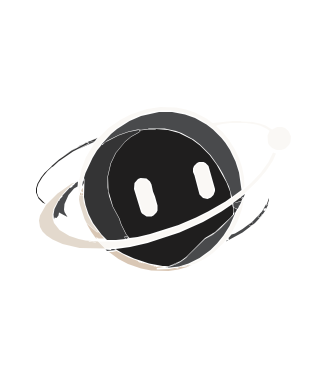

Your library. Flexo only reads what you add. Supports TXT, MD, CSV, JSON, HTML, XML, LOG, RTF, DOCX, XLSX, PPTX and text-based PDFs.
Tools
Tap a tool to start a chat with it ready.
History
Chats saved on this device.
App Features & Settings
Application-wide controls, preferences, privacy and local AI behaviour.
Appearance & themes
Compact interfaceReduce spacing across cards and lists
ThemeWarm charcoal and champagne · current theme
Dark
Chat preferences
Send with EnterUse Enter to send; Shift + Enter for a new line
Save chat historyKeep conversations on this device
AI behaviour & knowledge preferences
Use my knowledge librarySearch your imported local sources when relevant
Response engineOffline: built-in answers and local knowledge matching. No generative language model is bundled.
Local retrieval
Notifications
In-app notificationsShow real app events such as completed imports and exports
Notification centreView, read or clear saved app events
Privacy & security
Chats, notes and imported text are stored in this app’s WebView local storage on this device. Storage is quota-limited and is not encrypted by a dedicated app database. No cloud sync or account system is configured in this build.
Knowledge & storage preferences
Manage knowledge sourcesReview uploaded files and imported conversations
Storage managementReview local data usage and stored item counts
Data management
Export dataSave chats, knowledge and preferences as JSON
Restore backupRestore chats, knowledge and preferences from a Flexo JSON backup
Delete all dataRemove local chats, knowledge and settings
Import existing conversations
Export conversations from the service you use, then import the downloaded file here. Flexo cannot sign in to external accounts for you.
App information
Flexo AIAndroid · local-first application
Installed build
Backup restoreValidated Flexo JSON restore with rollback if saving fails
Available
Other application features
OnboardingReopen the getting-started guide
Quick AI overlayNo floating overlay service or shortcut is included in this build
Not included
Data Hub
A central place to review and manage the data stored by Flexo on this device.
Knowledge sources
0
Imported files and notes
Saved conversations
0
Local chat history
Local storage
—
Estimated Flexo data size
Data sources & organisation
Knowledge dataFiles, imported conversations and manually saved notes
Conversation dataPreviously saved chats on this device
Import dataAdd files or conversation exports
Import, export & recovery
Export personal dataDownload a JSON copy of chats, knowledge and preferences
Backup restoreRestore a previously exported Flexo JSON backup
Clear all local dataAvailable from App Features & Settings

Your Personal AI Assistant
How do you want to start?
Import your data
Choose where your conversations or files come from. Flexo imports files you select and stores extracted text in your local Knowledge Library.